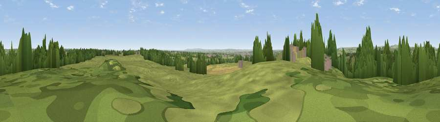

Drum Hill
#17828 in England · top 18% of its area beats it · near MorleymoorThe view, rendered

A 360° render of this exact spot computed from the terrain model, tree cover and land cover — summer colours, afternoon light, calibrated against photographs of famous viewpoints. Real trees, hedges and buildings will differ in detail.
The panorama
Grey silhouette: terrain skyline in each direction (720 bearings, Earth curvature and refraction included). Dashed green: skyline with trees (+15 m) and buildings (+8 m) as obstacles. Blue strip: how far the ground is visible on each bearing.
Where the view opens
Wedge length = distance to the farthest visible ground on that bearing (vegetation-aware). Rings at 10, 25 and 50 km.
What fills the view
55% grassland · 30% woodland · 8% cropland · 6% built-up
Angular shares of the visible panorama (visual magnitude), not map area. Landscape diversity 0.46 (0–1 Shannon).
Key numbers
More beautiful places nearby
The staircase of upgrades: each row has a higher view potential than everything closer. Driving times are estimates from straight-line distance, calibrated against real road routing — check an actual route before setting out.
| Place | Direction | Drive | Score |
|---|---|---|---|
| Viewpoint near Little Eaton | WSW · 0 km | ~1 min | 64.3 |
| Viewpoint near Hazelwood | NW · 5 km | ~12 min | 66.3 |
| Alport Height | NW · 12 km | ~22 min | 73.9 |
| Tissington Hill | WNW · 25 km | ~40 min | 75.5 |
| Viewpoint near Stanton under Bardon | SSE · 30 km | ~47 min | 76.0 |
| Viewpoint near Woodhouse Eaves | SSE · 30 km | ~48 min | 77.7 |
| Viewpoint near Mow Cop | WNW · 54 km | ~75 min | 78.9 |
| Viewpoint near Mow Cop | WNW · 54 km | ~75 min | 80.2 |
52.97527, -1.44282 · source: osm peak · position refined by local search. Computed location — check access rights before visiting.